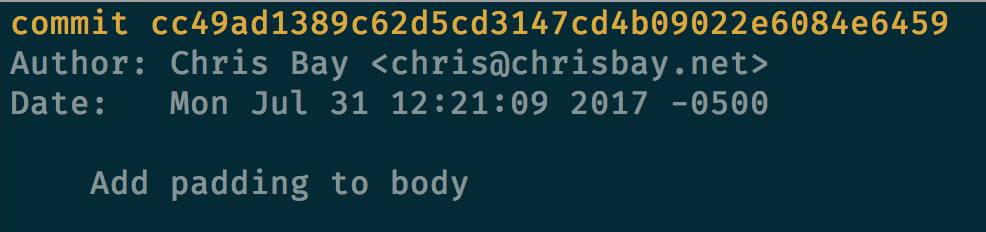
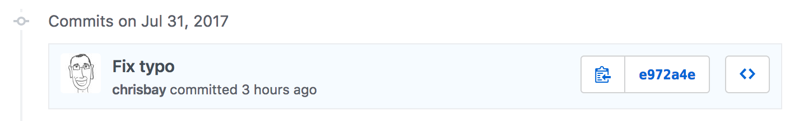
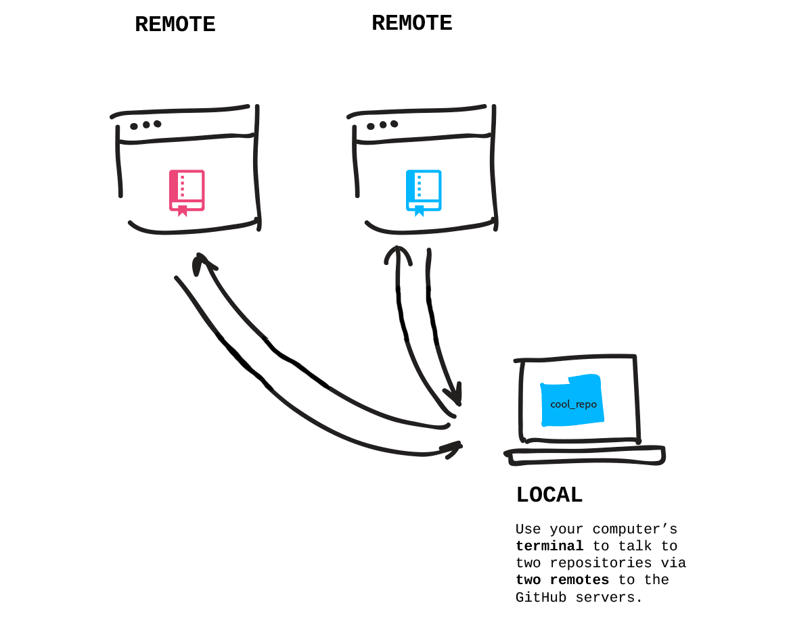

background-image: url(../images/codecamp.png) background-color: #cacaca --- class: center, middle # Advanced Git --- ## Centralized Version Control Back in the dark ages of version control, version control systems (VCS) were centralized: -- <img src="images/cvcs.png" style="max-height:400px;" /> --- ## Distributed Version Control Git brought us into the light with **distributed version control**: -- <img src="images/dvcs.png" style="max-height:400px;" /> --- ## Advantages of Distributed Version Control - No canonical, reference copy of the codebase exists by default; only working copies -- - Common operations (commits, viewing history, and reverting changes) are fast -- - Communication is only necessary when sharing changes among other peers -- - Each working copy effectively functions as a remote backup of the codebase --- ## Viewing Information with Git ### log `git log` shows you your recent commit history for the current branch ### diff `git diff` shows you the explicit changes made in your current branch, compared to the most recent commit `git diff branch1..branch2` shows you the differnces between two branches --- ## Commit Hashes Each commit is uniquely identified by a **hash**. These hashes are visible when using `git log`: --  -- Or when looking at info on GitHub:  --- ## Remotes Since there is no "privileged" repository, we can easily set up multiple remote repositories that are each peers of our local repository --  --- ## Remote Commands Working with remotes: `git remote` - lists all of the configured remotes `git remote -v` - lists all of the configured remotes, with URL info `git remote add <name> <URL>` - adds a new remote with the given name, located at the given location `git remote rm <name>` - deletes the remote reference (not the remote itself) --- ## Fetching You're used to using `git pull`, which actually carries out two separate operations: `fetch` and `merge` -- <img src="images/fetch.png" style="max-height:400px;"/> --- ## Using Fetch To fetch changes from the `origin` remote: ```nohighlight $ git fetch ``` -- To fetch changes from a specific remote: ```nohighlight $ git fetch <name> ``` -- To fetch changes from a specific branch at a specific remote: ```nohighlight $ git fetch <name> <branch> ``` --- ## Working With Commits ### reset `git reset <commit-hash>` sets the current status of your working branch to be the given commit, with all changes past the commit marked as unstaged. This can "back up" multiple commits. _Warning_: You'll often see people tell you to `git reset --hard` in order to "undo" changes. Be careful, as this _deletes_ all unstaged changes. -- ### revert `git revert <commit-hash>` creates and applies a commit that is the _opposite_ of the commit with the given hash. This "undoes" only one commit. It also is visible in the history, since it creates a new commit. --- ## Stashing Changes `git stash` records the uncommitted changes in your working directory, and sets the state to be "clean" (i.e. your working copy is the same as the most recent commit in your local repository) -- `git pop` will "un-stash" the most recently stashed set of changes -- `git stash list` and `git stash show` will let you view info about stashed changes. -- **Tip:** Use `git stash` and `git pop` to cleanly switch branches when you accientally make changes to the wrong branch --- ## Resources [Official Git Documentation](https://git-scm.com/doc), including [reference documentation](https://git-scm.com/docs) and the [Pro Git](https://git-scm.com/book/en/v2) book. [Connecting to GitHub with SSH](https://help.github.com/articles/connecting-to-github-with-ssh/)